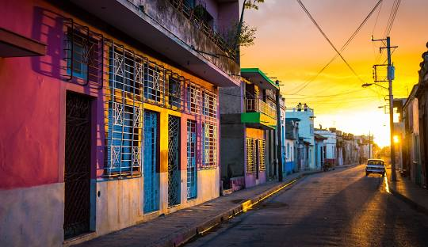
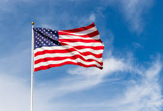
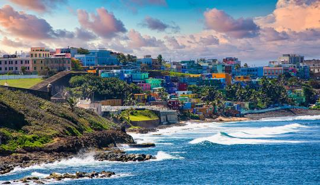

República Dominicana es un país de América situado en el Caribe, ubicado en la zona central de las Antillas; ocupa la parte central y oriental de la isla La Española. Su capital y ciudad más poblada es Santo Domingo. Limita al norte con el océano Atlántico, al este con el canal de la Mona, que lo separa de Puerto Rico, al sur con el mar Caribe, y al oeste con Haití, que es el otro país situado en La Española. Con 48 448 km²7? y una población superior a los 11,4 millones de habitantes en septiembre de 2024,12? es el segundo país más extenso de los países insulares caribeños, después de Cuba, y el tercero más poblado, después de Haití y Cuba.

Cuba, oficialmente República de Cuba,1? es un país soberano insular, asentado en las Antillas del mar Caribe. El territorio está organizado en quince provincias y un municipio especial con La Habana como capital y ciudad más poblada.

Puerto Rico, oficialmente Estado Libre Asociado de Puerto Rico, es un territorio no incorporado de los Estados Unidos que cuenta con estatus de autogobierno de orientación democrática. Con aproximadamente 3.2 millones de habitantes, Puerto Rico está organizado políticamente en setenta y ocho municipios, de los cuales el más poblado es el municipio capitalino de San Juan. Está ubicado en América Insular en el noreste del Caribe, al este de la isla de La Española y al oeste de las Islas Vírgenes de los Estados Unidos. El archipiélago de Puerto Rico incluye la isla principal de Puerto Rico (8,868 km²) —la más pequeña de las Antillas Mayores— y un sinnúmero de cayos e islas más pequeñas,3?11?de las cuales las más grandes son Vieques (348 km²),12?13?Mona (55 km²)14?15?y Culebra (30 km²).16?17?Puerto Rico tiene clima tropical, poseyendo una gran diversidad de ecosistemas: bosques secos y lluviosos, zonas cársticas,18?cordilleras montañosas y hábitats marinos, incluyendo playas, arrecifes de coral, salares, ríos, lagos, lagunas, manglares y bahías bioluminiscentes.19?20

Estados Unidosnota 2? (EE. UU.; en inglés: United States o US),nota 3? denominado oficialmente Estados Unidos de América (EUA; en inglés: United States of America o USA)13? es un país soberano constituido en una república federal constitucional compuesta por cincuenta estados y un distrito federal. Limita al norte con Canadá y al sur, con México. Su capital es Washington D. C. y su ciudad más poblada, Nueva York. La mayor parte del país se ubica en el medio de América del Norte ?donde se encuentran sus 48 estados contiguos y Washington D. C.?, entre los océanos Pacífico y Atlántico.
Rusia (en ruso: ?????´?, romanizado: Rossíya?),n. 1? conocida formalmenten. 2? como Federación de Rusia (?????´????? ??????´???) y también citada en ocasiones como Federación Rusa, es un país euroasiático que se extiende sobre Europa del Este y Asia del Norte.n. 3? Es el país más extenso del mundo, con una superficie de 17 125 191 km²,2? equivalente a algo más de la novena parte de la tierra firme del planeta, y posee una gran variedad de relieve y de ecosistemas. Su capital es la ciudad federal de Moscú.